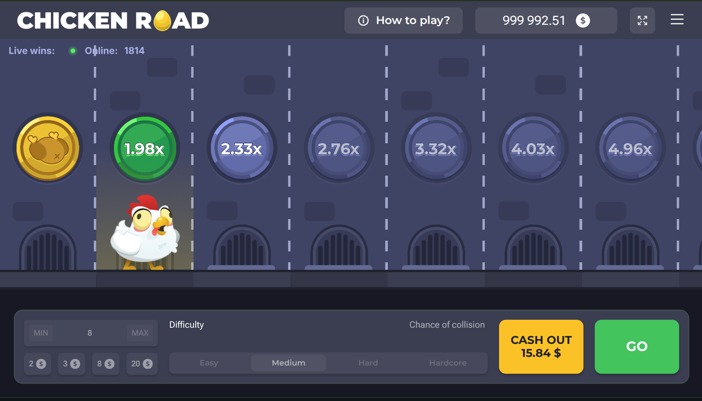

Is Chicken Road legit?
The Chicken Road game by InOut Games is legitimate and provably fair. What isn't legitimate are clone websites and 'hack' apps using the name. Stick to licensed operators and you're playing the real, verifiable game. 18+.
Chicken Road
A straight answer based on the provider, provable fairness and real player reports, plus how to spot fake clones.
18+ only · Real-money gambling
Short answer: the Chicken Road game itself, made by InOut Games, is real and provably fair, and you can check any round's outcome yourself. The scams are the clone sites and 'predictor' apps that borrow the name. Below is the evidence, how the fairness actually works, and how to tell a real operator from a fake.
Provably FairTransparent. Verifiable. Fair.
Crash Point
x3.42

Yes, the Chicken Road game is legitimate. It's a provably-fair crash game distributed by licensed casino operators. What isn't legitimate: clone websites that copy the design, fake apps, and 'hack' or 'predictor' tools that promise guaranteed wins. If you play the real game at a licensed operator, you're playing a verifiable, honest game. If you land on a random lookalike site, you're the product.
Chicken Road is developed by InOut Games and offered through licensed online casinos. A legitimate operator will show its gaming licence (for example a recognised regulator) in the site footer and list InOut Games as the provider on the game. If a site carries Chicken Road but shows no provider and no licence, treat it as a clone.
Chicken Road uses a provably-fair system. Each round's result is generated from a server seed combined with a client seed you can check after the round, so the outcome can't be altered mid-game. You can verify any round yourself. Note that provable fairness proves the game is honest; it does not make it beatable, because the RTP is fixed.
No. Because the game is provably fair, no one, including the operator, can change a round after it starts. It does have a house edge, like every casino game: the RTP is around 98%, meaning about 2% is retained by the house over the long run. That edge is normal and disclosed, not manipulation. What people often call 'rigged' is simply variance: random runs of losses that feel unfair but aren't.
Use this checklist. Red flags: a domain that isn't a known licensed operator; promises of guaranteed wins, 'hacks', or 'predictor' downloads; a Chicken Road APK from a non-official link; no visible licence or company info; no clear withdrawal terms; and pressure to deposit quickly or 'unlock' winnings with another payment. A real operator is licensed, lists InOut Games as the provider, publishes withdrawal terms, and never promises you'll win.
Real site vs fake clone — quick checklist
Real vs fake domain — examples
licensed-casino.com/games/chicken-road
Known licensed operator · lists InOut Games
chicken-road-official-win.com
Marketing words ("official", "win") glued onto the name
chikenroad-app.net
Misspelled name + generic "app" wording
chickenroad.download-apk.xyz
"apk download" + throwaway TLD — classic clone pattern
Examples are illustrative patterns, not a list of specific sites. Always confirm the provider (InOut Games) and a visible licence before you deposit.
Player reports are mixed, which is normal for any gambling game. Common praise: the demo is easy to try and the cash-out mechanic is fun and fast. Common complaints usually trace back to two things: losing streaks (expected variance on a ~98% RTP game), and clone sites that delay or refuse withdrawals. The pattern in genuine complaints is almost always an unlicensed lookalike, not the InOut game itself.
Player reports & reviews
Stick to licensed operators, verify the provider is InOut Games, read the withdrawal terms before depositing, and ignore anything promising guaranteed profit. Start in the free demo to learn the game with no risk. When you're ready, compare vetted operators on our Chicken Road casinos page.
The Chicken Road game by InOut Games is legitimate and provably fair. What isn't legitimate are clone websites and 'hack' apps using the name. Stick to licensed operators and you're playing the real, verifiable game. 18+.
No. Chicken Road uses a provably-fair system, so each round's outcome comes from seeds you can check afterward and can't be changed mid-round. It has a house edge like any casino game (RTP ~98%), but that isn't rigging.
The game is real. Fake versions exist as clone sites and apps that copy the branding to take deposits or logins. You can tell the real one by playing at a licensed operator that lists InOut Games as the provider.
Watch for red flags: a domain that isn't a known licensed operator, promises of guaranteed wins or 'hacks', APK downloads from non-official links, no licensing info, and no clear withdrawal terms. Any of these, walk away.
Yes, it pays real money, but it's a game of chance with a house edge, so you can just as easily lose. No strategy, 'hack', or predictor changes the odds. Play for fun, set limits, and never chase losses.
Chicken Road is a real-money game of chance, not a way to make money. Play for entertainment only, set deposit and time limits before you start, and never bet money you can't afford to lose. You must be 18+ (or the legal age in your country). If gambling stops being fun or feels out of control, get free, confidential help at BeGambleAware.org or GamCare (or your local helpline).
We may earn a commission if you sign up through links on this page, at no extra cost to you. It never affects our rankings or verdicts.